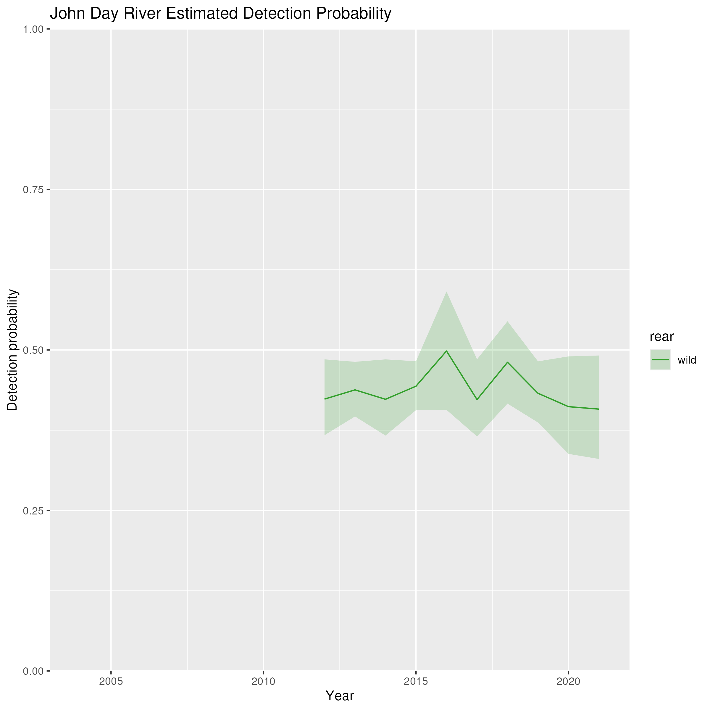
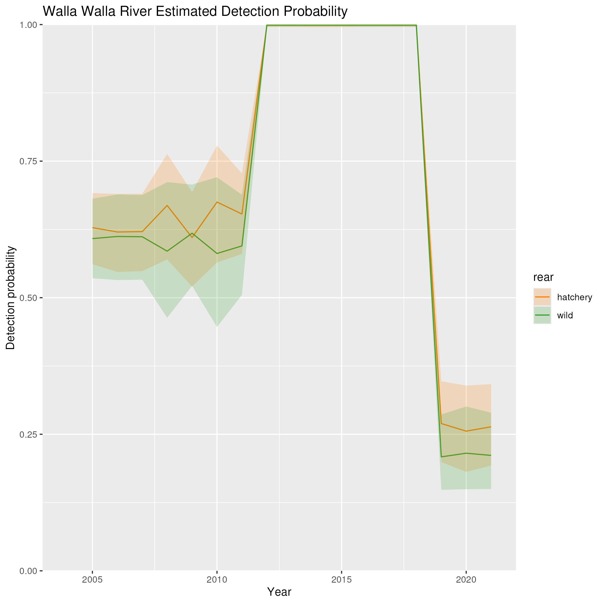
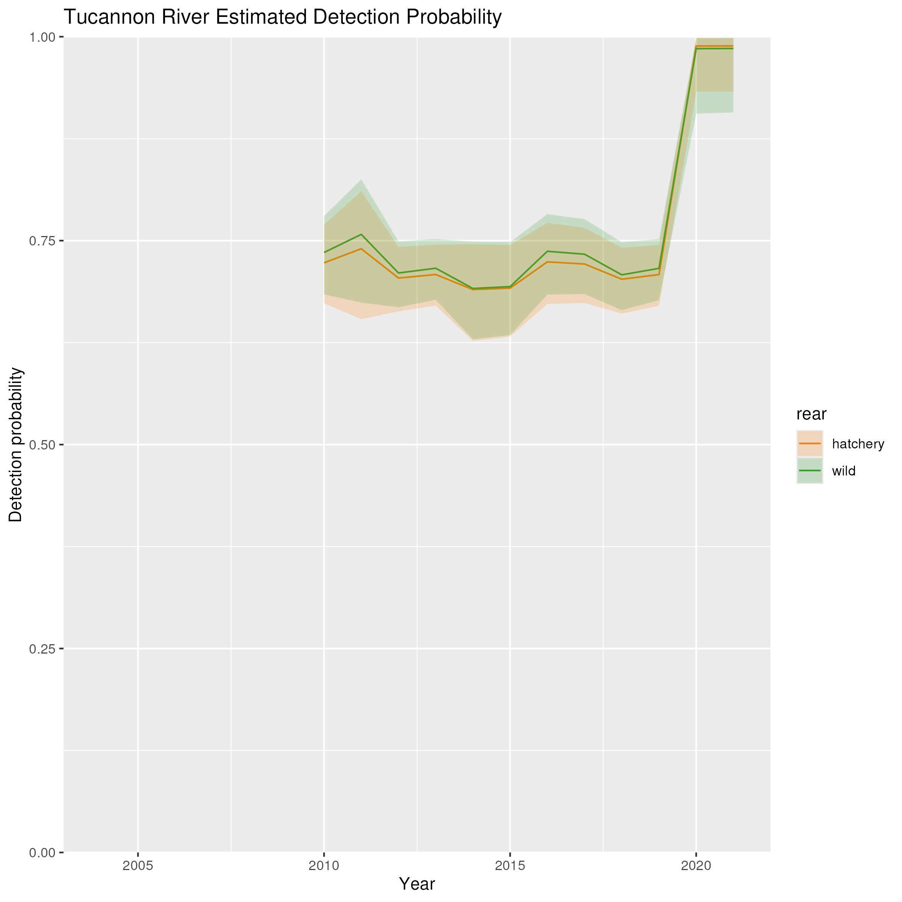

Results - Detection Efficiency
Markus Min
2024-07-02
Description
This page shows the estimated detection efficiency for each tributary by year. As a reminder, detection efficiency is modeled in a two step process:
- A model is fit to estimate the detection efficiency of the river mouth array at each tributary, for a which a river mouth array and some upstream arrays are available. Detection efficiency is modeled as a function of an intercept term (where some tributaries have different intercept terms depending on the year, to account for changing array configurations) and discharge.
- The posteriors from the previous model are then used as priors for the same terms in the full model, where movements throughout the basin are modeled. Note that because hatchery and wild populations were fit in separate models, the posteriors for the detection efficiency from each model are slightly different.
PLEASE NOTE: There was a typo in the indexing of the detection efficiency correction in the main Stan model. This typo has been fixed and the updated model is now running on Hyak, but the results shown here are still the old model (which indexed discharge data incorrectly, meaning that the tributaries were all matched with the wrong discharge data)
Middle Columbia

Detection efficiency for the Deschutes
River.

Detection efficiency for the John Day
River.
Detection efficiency for Fifteenmile
Creek.

Detection efficiency for the Umatilla
River.

Detection efficiency for the Yakima River.

Detection efficiency for the Walla Walla
River.
Upper Columbia

Detection efficiency for the Wenatchee
River.
Detection efficiency for the Entiat River.

Detection efficiency for the Okanogan
River.

Detection efficiency for the Methow River.
Snake River

Detection efficiency for Asotin Creek.
Detection efficiency cannot be estimated for the Clearwater River.

Detection efficiency for the Imnaha River.
Detection efficiency cannot be estimated for the Grande Ronde River.
Detection efficiency cannot be estimated for the Salmon River.

Detection efficiency for the Tucannon
River.